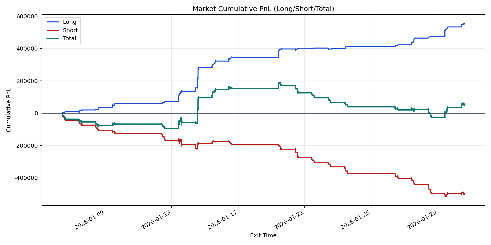
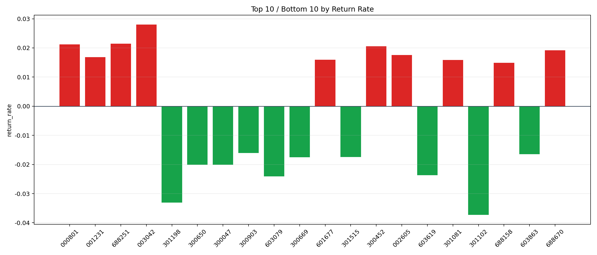

| repo_root | /home/haoranyou/data/output/alpha0.4_1w_5s_3ticks |
|---|---|
| period_months | 1 |
| period_label | 2026-01-06_to_2026-01-30 |
| start_time | 2026-01-06 09:50:12 |
| end_time | 2026-01-30 15:00:00 |
| n_trades | 89211 |
| n_symbols | 1662 |
| total_pnl | 49740.07235000012 |
| long_total_pnl | 552412.64185 |
| short_total_pnl | -502672.5695 |
| total_entry_notional | 834246358.0 |
| long_entry_notional | 195596600.0 |
| short_entry_notional | 638649758.0 |
| total_return_rate | 5.962276235672834e-05 |
| long_return_rate | 0.0028242446026669177 |
| short_return_rate | -0.00078708644793693 |
| top_symbols_by_return | ["003042", "688251", "000801", "300452", "688670", "002605", "001231", "601677", "301081", "688158"] |
| bottom_symbols_by_return | ["301102", "301198", "603079", "603619", "300047", "300650", "300669", "301515", "603863", "300903"] |

